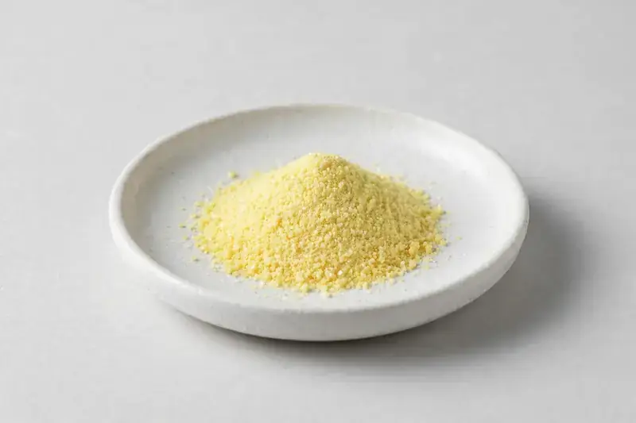

Alpha-lipoic acid — high-purity bulk powder positioned for antioxidant capsule, tablet and powder blend formulations.

Overview
Alpha-lipoic acid is a sulfur-containing compound supplied as a yellow crystalline powder, standardised on assay content. Overseas supplement brands request it mainly for antioxidant-positioned capsules and blends, and demand has held steady as formulators pair it with vitamins and botanical antioxidants. As a Xi'an-based trading company we source ALA through vetted partner producers and confirm feasibility against each buyer's target specification before quoting.
Specifications below reflect commonly requested options in the market — not a stock list. Share your target spec and we'll confirm exactly what we can supply, honestly.
| Specification | Details |
|---|---|
| Botanical identity | Alpha-lipoic acid, yellow crystalline powder |
| Marker compound | Alpha-lipoic acid — commonly requested: 99%+ (HPLC) |
| Appearance | Yellow to light yellow fine powder |
| Mesh size | Typically 80–100 mesh (confirm per inquiry) |
| Testing | COA/TDS arranged on request; scope agreed per your spec |
Applications
Documentation
We don't claim in-house labs or certifications we don't hold. COA and TDS documents can be arranged on request, and testing scope is agreed against your specification before supply.
FAQ
Related products
Echinacea purpurea
Key marker: Echinacoside
View specs →Valeriana officinalis
Key marker: Valerenic Acids
View specs →Trigonella foenum-graecum
Key marker: Saponins
View specs →Pyrroloquinoline quinone (PQQ)
Key marker: PQQ 99%+
View specs →Magnesium bisglycinate
Key marker: 10-18% Mg
View specs →Send your target spec and volumes — we'll respond with a tailored quotation.
Request a Quote